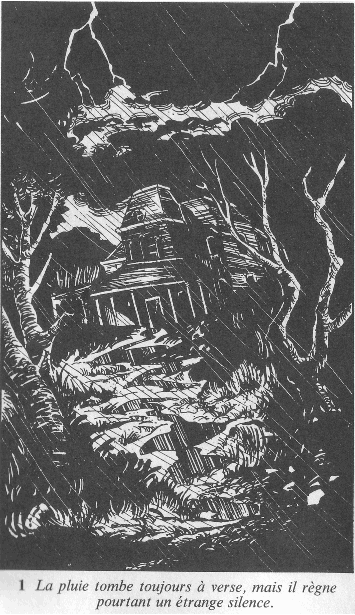

Vous grimpez les marches quatre à quatre et, arrivé devant la porte du Manoir, vous vous arrêtez un instant pour reprendre votre souffle. Bien que vous ayez couru tout le long du chemin, la pluie a transpercé vos vêtements, et vos pieds sont complètement trempés. A en juger par le nombre de flaques d'eau dans lesquelles vous avez pataugé, il en coûterait une véritable fortune pour remettre l'allée en état. Maintenant à l'abri du porche, vous secouez vos vêtements imbibés d'eau. La pluie tombe toujours à verse, mais il règne pourtant un étrange silence.
Aucune lumière ne brille au rez-de-chaussée, et vous faites quelques pas en arrière pour essayer d'apercevoir la fenêtre qui avait attiré votre attention : les fenêtres du premier étage sont plongées dans l'obscurité ; la lumière que vous aviez vue a disparu. L'endroit semble complètement désert. C'est alors que vous prenez conscience de l'heure : il est minuit moins cinq et tous les habitants de la maison dorment probablement. Une chouette hulule dans le lointain et un frisson vous parcourt l'échine. Vous commencez à éprouver quelque frayeur de la situation dans laquelle vous vous trouvez : égaré en pleine campagne, sur le seuil d'une vieille maison à moitié en ruine, et à l'allure inquiétante, et, sur le point de réveiller quiconque peut l'habiter... à minuit! Vous ne serez certainement pas accueilli à bras ouverts, mais si vous tenez à être présent à votre rendez-vous, demain matin, vous n'avez pas le choix : vous devez trouver un téléphone pour demander de l'aide.
Alors que vous vous tournez vers la porte d'entrée, vous remarquez une lueur sourde provenant du côté gauche du Manoir : une lampe vient d'être allumée. Quelqu'un est donc éveillé, et vous poussez un soupir de soulagement. Au milieu de la porte est fixé un marteau sculpté, et un cordon de sonnette pend à votre droite. Allez-vous frapper à l'aide du marteau , tirer le cordon de sonnette, ou préférez-vous vous diriger vers la lumière en contournant le Manoir?